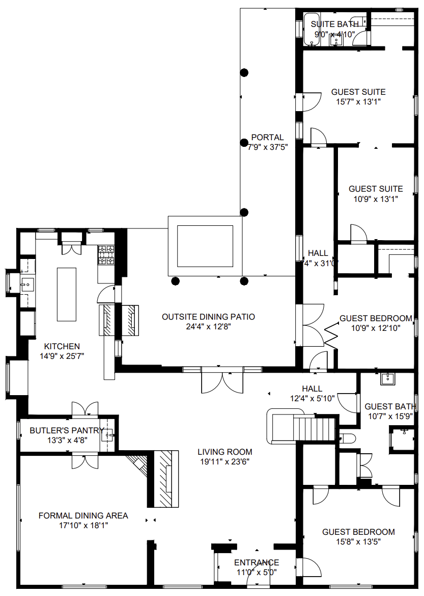
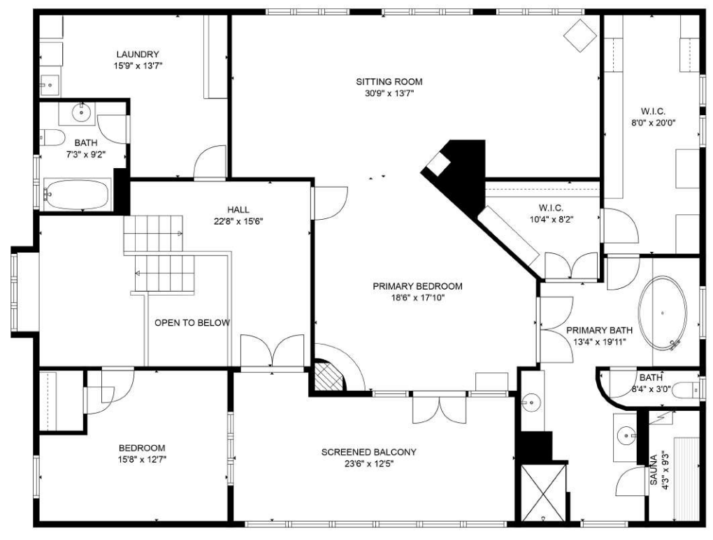

Floor Plans
Detailed floor plans showing the layout of both levels
First Floor |
Second Floor |
Prairie Style Meets Adobe: A Unique Architectural Fusion
Arts & Crafts Movement Context
The Wilson House embodies the Arts and Crafts movement's reaction against industrialization's effects on design. This movement, beginning in 19th-century England, advocated return to simplicity of handwork, elimination of gratuitous decorative detail, and respect for material integrity.
In America, the movement manifested in regional architectural styles rooted in natural environment and local traditions, sharing reverence for natural simplicity and search for genuine American style not tied to European past.
Prairie School Origins
Born in Chicago, the Prairie style represented unique regional expression with horizontal lines said to express flat prairie expanses. Louis Sullivan served as spiritual father, Frank Lloyd Wright as best-known practitioner. The style spread nationally through magazines and pattern books from 1900 through WWI.
Southwestern Adaptation
Henry Trost, who worked in Chicago, designed notable Prairie examples in the Southwest, including his own home in El Paso and the Spitz House in Albuquerque (both ~1909). No evidence found that Trost was active in Santa Fe, making Wilson's house potentially self-designed.
Mission Style Interior
The term "Mission" came to be loosely applied to Arts and Crafts movement products, including furniture and compatible interior décor styles. Wilson's interior exemplifies this with extensive woodwork, built-in furniture, and craftsman details.
Gustav Stickley Influence
Floor plan shows strong similarity to Gustav Stickley's Mission prototype published in The Craftsman magazine, suggesting Wilson may have adapted published plans to local adobe construction methods.
Architectural Details Gallery
Click images for detailed examination of architectural elements

316 front of house

Mission Style Built-in Furniture (will be replaced)
Early 20th Century Adobe Construction Techniques
Detailed analysis of construction methods revealed during restoration
Adobe Block Construction
Traditional sun-dried adobe bricks made from local clay, sand, and straw, laid with cement mortar - a transitional technique between traditional mud mortar and modern construction.
Wooden Frame Integration
Innovative combination of adobe walls with wooden framing for structural support, allowing for larger openings and Prairie School horizontal emphasis.
Cement Stucco Exterior
Pebbled, gray cement stucco applied over adobe walls - a modern finish that protected the adobe while allowing for Prairie School's clean, undecorated wall surfaces.
Box Beam Ceiling System
Decorative wooden box beams providing both structural support and Prairie School aesthetic, stained dark to contrast with lighter wall colors.
Integrated Built-in Systems
Extensive built-in furniture and storage designed as integral architectural elements, reflecting Arts & Crafts philosophy of unified design.
Window and Door Integration
Carefully designed openings with concrete sills and lintels, accommodating both casement and double-hung window systems within adobe walls.
Horizontal Emphasis & Form
J-Shaped Configuration
Distinctive two-story house with two one-story wings of unequal length extending south, forming J-shape around central placita (courtyard). Wings faced on two sides by portal supported by round, stained posts.
Prairie Style Characteristics
- Low-pitched, hipped roofs creating horizontal emphasis
- Strong overhanging eaves providing weather protection
- Horizontal wooden stripping marking story division
- Flat wall surfaces without applied decoration
- Bands of second-story windows emphasizing horizontality
- Oblong chimney maintaining horizontal aesthetic
Local Adaptation
Placement of one-story wings around placita and portal facing it derive from local Southwestern tradition, creating unique fusion of Prairie and regional elements.
Adobe Construction Methods
Exterior Materials
Pebbled, gray cement-stuccoed exterior over adobe walls, free of decoration except for narrow, light-green wooden stripping. This demonstrates versatility of adobe in non-traditional architectural styles.
Window Systems
First-floor windows predominantly double-hung with twelve small panes in top section and single pane below, inset in multiples of two or three with concrete sills and lintels.
Structural Elements
- Partial stone basement on east end
- Flagstone walk around house perimeter
- Exposed adobes visible in unfinished second-floor room
- Cement mortar and wooden framing construction
Roof System
Current asbestos-tile roof (suggestive of Mission style) is not original but added at unknown date, replacing original roofing material.
Architectural Significance & Preservation Challenges
Understanding the unique architectural value and current preservation needs
Historical Importance
The Wilson House provides rare illustration of adobe's versatility and Santa Fe's architectural diversity in transitional years before Spanish-Pueblo Revival achieved hegemony. It represents important evidence of varied but little understood period.
National Context
- Unique Prairie School adaptation to Southwestern materials
- Demonstrates Arts & Crafts movement's regional variations
- Shows transition period before stylistic monopolization
- Illustrates architect-builder experimentation in early Santa Fe
Current Condition Assessment
House has been little altered from original appearance but has suffered serious effects of neglect in recent years, with water damage from roof leaks affecting multiple rooms.
Preservation Priorities
- Address structural water damage while preserving original adobe
- Restore Prairie-style horizontal emphasis elements
- Preserve Mission-style interior woodwork and built-ins
- Maintain open floor plan and ten-foot ceiling heights
- Document construction methods visible in unfinished areas
Restoration Approach: Preserving Architectural Integrity
Our restoration philosophy recognizes this house as significant cultural resource both for its associations with the Wilson and Federici families and for its place in Santa Fe architecture history. The goal is preserving its predominant Prairie style, Spanish-Pueblo Revival elements, and Craftsman Mission-style interior as unified response to Arts and Crafts sensibilities.